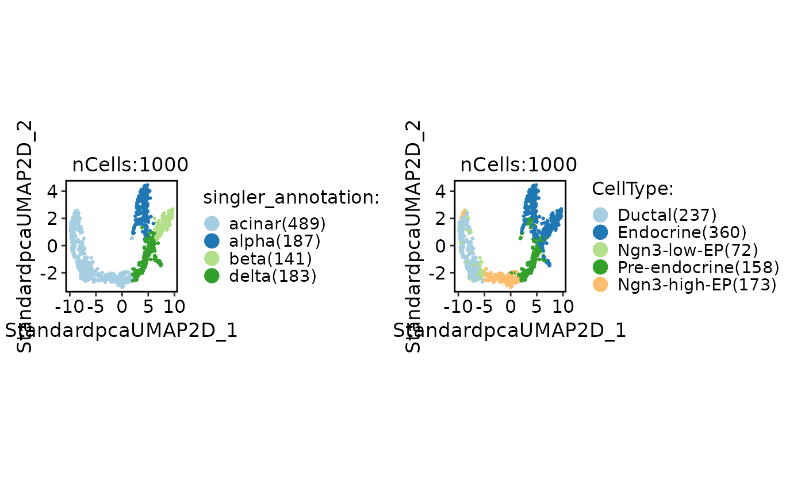

Annotate single cells using SingleR
Usage
RunSingleR(
srt_query,
srt_ref,
query_group = NULL,
ref_group = NULL,
query_assay = "RNA",
ref_assay = "RNA",
genes = "de",
de.method = "wilcox",
sd.thresh = 1,
de.n = NULL,
aggr.ref = FALSE,
aggr.args = list(),
quantile = 0.8,
fine.tune = TRUE,
tune.thresh = 0.05,
prune = TRUE,
cores = 1,
verbose = TRUE
)Arguments
- srt_query
An object of class Seurat to be annotated with cell types.
- srt_ref
An object of class Seurat storing the reference cells.
- query_group
A character vector specifying the column name in the
srt_querymetadata that represents the cell grouping.- ref_group
A character vector specifying the column name in the
srt_refmetadata that represents the cell grouping.- query_assay
A character vector specifying the assay to be used for the query data. Default is the default assay of the
srt_queryobject.- ref_assay
A character vector specifying the assay to be used for the reference data. Default is the default assay of the
srt_refobject.- genes
"genes"parameter in SingleR::SingleR function.- de.method
"de.method"parameter in SingleR::SingleR function.- sd.thresh
Deprecated and ignored.
- de.n
An integer scalar specifying the number of DE genes to use when
genes="de". Ifde.method="classic", defaults to500 * (2/3) ^ log2(N)whereNis the number of unique labels. Otherwise, defaults to 10. Ignored ifgenesis a list of markers/DE genes.- aggr.ref, aggr.args
Arguments controlling the aggregation of the references prior to annotation, see
trainSingleR.- quantile
"quantile" parameter in SingleR::SingleR function.
- fine.tune
"fine.tune"parameter in SingleR::SingleR function.- tune.thresh
"tune.thresh"parameter in SingleR::SingleR function.- prune
"prune"parameter in SingleR::SingleR function.- cores
The number of cores to use for parallelization with foreach::foreach. Default is
1.- verbose
Whether to print the message. Default is
TRUE.
Examples
data(panc8_sub)
# Simply convert genes from human to mouse and preprocess the data
genenames <- make.unique(
thisutils::capitalize(
rownames(panc8_sub),
force_tolower = TRUE
)
)
names(genenames) <- rownames(panc8_sub)
panc8_sub <- RenameFeatures(
panc8_sub,
newnames = genenames
)
panc8_sub <- CheckDataMerge(
panc8_sub,
batch = "tech"
)[["srt_merge"]]
# Annotation
data(pancreas_sub)
pancreas_sub <- standard_scop(pancreas_sub)
#> StandardPC_ 1
#> Positive: Aplp1, Cpe, Gnas, Fam183b, Map1b, Hmgn3, Pcsk1n, Chga, Tuba1a, Bex2
#> Syt13, Isl1, 1700086L19Rik, Pax6, Chgb, Scgn, Rbp4, Scg3, Gch1, Camk2n1
#> Cryba2, Pcsk2, Pyy, Tspan7, Mafb, Hist3h2ba, Dbpht2, Abcc8, Rap1b, Slc38a5
#> Negative: Spp1, Anxa2, Sparc, Dbi, 1700011H14Rik, Wfdc2, Gsta3, Adamts1, Clu, Mgst1
#> Bicc1, Ldha, Vim, Cldn3, Cyr61, Rps2, Mt1, Ptn, Phgdh, Nudt19
#> Smtnl2, Smco4, Habp2, Mt2, Col18a1, Rpl12, Galk1, Cldn10, Acot1, Ccnd1
#> StandardPC_ 2
#> Positive: Rbp4, Tagln2, Tuba1b, Fkbp2, Pyy, Pcsk2, Iapp, Tmem27, Meis2, Tubb4b
#> Pcsk1n, Dbpht2, Rap1b, Dynll1, Tubb2a, Sdf2l1, Scgn, 1700086L19Rik, Scg2, Abcc8
#> Atp1b1, Hspa5, Fam183b, Papss2, Slc38a5, Scg3, Mageh1, Tspan7, Ppp1r1a, Ociad2
#> Negative: Neurog3, Btbd17, Gadd45a, Ppp1r14a, Neurod2, Sox4, Smarcd2, Mdk, Pax4, Btg2
#> Sult2b1, Hes6, Grasp, Igfbpl1, Gpx2, Cbfa2t3, Foxa3, Shf, Mfng, Tmsb4x
#> Amotl2, Gdpd1, Cdc14b, Epb42, Rcor2, Cotl1, Upk3bl, Rbfox3, Cldn6, Cer1
#> StandardPC_ 3
#> Positive: Nusap1, Top2a, Birc5, Aurkb, Cdca8, Pbk, Mki67, Tpx2, Plk1, Ccnb1
#> 2810417H13Rik, Incenp, Cenpf, Ccna2, Prc1, Racgap1, Cdk1, Aurka, Cdca3, Hmmr
#> Spc24, Kif23, Sgol1, Cenpe, Cdc20, Hist1h1b, Cdca2, Mxd3, Kif22, Ska1
#> Negative: Anxa5, Pdzk1ip1, Acot1, Tpm1, Anxa2, Dcdc2a, Capg, Sparc, Ttr, Pamr1
#> Clu, Cxcl12, Ndrg2, Hnf1aos1, Gas6, Gsta3, Krt18, Ces1d, Atp1b1, Muc1
#> Hhex, Acadm, Spp1, Enpp2, Bcl2l14, Sat1, Smtnl2, 1700011H14Rik, Tgm2, Fam159a
#> StandardPC_ 4
#> Positive: Glud1, Tm4sf4, Akr1c19, Cldn4, Runx1t1, Fev, Pou3f4, Gm43861, Pgrmc1, Arx
#> Cd200, Lrpprc, Hmgn3, Ppp1r14c, Pam, Etv1, Tsc22d1, Slc25a5, Akap17b, Pgf
#> Fam43a, Emb, Jun, Krt8, Dnajc12, Mid1ip1, Ids, Rgs17, Uchl1, Alcam
#> Negative: Ins2, Ins1, Ppp1r1a, Nnat, Calr, Sytl4, Sdf2l1, Iapp, Pdia6, Mapt
#> G6pc2, C2cd4b, Npy, Gng12, P2ry1, Ero1lb, Adra2a, Papss2, Arhgap36, Fam151a
#> Dlk1, Creld2, Gip, Tmem215, Gm27033, Cntfr, Prss53, C2cd4a, Lyve1, Ociad2
#> StandardPC_ 5
#> Positive: Pdx1, Nkx6-1, Npepl1, Cldn4, Cryba2, Fev, Jun, Chgb, Gng12, Adra2a
#> Mnx1, Sytl4, Pdk3, Gm27033, Nnat, Chga, Ins2, 1110012L19Rik, Enho, Krt7
#> Mlxipl, Tmsb10, Flrt1, Pax4, Tubb3, Prrg2, Gars, Frzb, BC023829, Gm2694
#> Negative: Irx2, Irx1, Gcg, Ctxn2, Tmem27, Ctsz, Tmsb15l, Nap1l5, Pou6f2, Gria2
#> Ghrl, Peg10, Smarca1, Arx, Lrpap1, Rgs4, Ttr, Gast, Tmsb15b2, Serpina1b
#> Slc16a10, Wnk3, Ly6e, Auts2, Sct, Arg1, Dusp10, Sphkap, Dock11, Edn3
pancreas_sub <- RunSingleR(
srt_query = pancreas_sub,
srt_ref = panc8_sub,
query_group = "Standardpca_SNN_res.0.6",
ref_group = "celltype"
)
CellDimPlot(
pancreas_sub,
group.by = c("singler_annotation", "CellType")
)

pancreas_sub <- RunSingleR(
srt_query = pancreas_sub,
srt_ref = panc8_sub,
query_group = NULL,
ref_group = "celltype"
)
CellDimPlot(
pancreas_sub,
group.by = c("singler_annotation", "CellType")
)